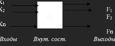

ЦИФРОВЫЕ АВТОМАТЫ
Процесс синтеза логических схем состоит из следующих этапов:
1. На основе анализа функций, которые должны выполняться устройством, строится таблица истинности .
2. По таблице истинности составляется логическая формула.
3. Логическая формула минимизируется одним из изученных методов .
4. По минимизированной формуле составляется логическая схема из логических устройств.
( Лучше та, где меньше устройств и они однороднее).
Среди логических устройств ЭВМ широко распространены цифровые автоматы.

На вход поступает информация в виде набора сигналов x (x1, x2, … xn).
При этом совокупность выходных сигналов F в данный момент времени t ,определяется входным набором.
При изменении входного сигнала x изменяется и выходной сигнал F .
Таким образом, выходной сигнал комбинационного автомата зависит только от входного сигнала и не зависит от внутреннего состояния, а, следовательно, такой автомат называется автоматом без памяти (примитивный автомат).
Логическое устройство, в котором выходной сигнал зависит не только от входного сигнала, но и от внутреннего состояния называется цифровым автоматом с памятью, характеризуется 3 алфавитами: входным сигналом Х, внутренним состоянием Q , выходной функцией F .
Функционирование цифрового автомата определяется связями трех алфавитов.
В зависимости от функций переходов (изменение внутреннего состояния) цифровые автоматы
могут быть трех типов:
1) Синхронный автомат имеет устройство синхронизации (стробирования), которое определяет переход от такта t-1 к t .
Функция переходов Qt= (Xt-1, Qt-1).
2) Асинхронный автомат: переход от t-1 к t определяется не устройством синхронизации, а изменением входного сигнала.
Функция переходов: Qt = (Xt , Qt-1)
3) Автономный автомат: функция переходов: Qt = (Qt-1) – не зависит от входного сигнала вообще.
Временной интервал называется тактом .
t-1 - предыдущий момент времени .
t – настоящий момент времени .
t +1 – следующий момент времени.
В зависимости от функций выходов цифровые автоматы могут быть:
1) Автомат Мили: Ft = (Qt, Xt) – зависит и от входного сигнала и от внутреннего состояния.
2) Автомат Мура: Ft = (Qt) – не зависит от входного сигнала.
3) Комбинационный автомат: F = (X) – изменение выходной функции зависит только от изменения входного сигнала X ,от тактов не зависит, от внутреннего состояния не зависит.
Все рассматриваемые законы функций используются при анализе работы устройства и при синтезе
логических устройств.